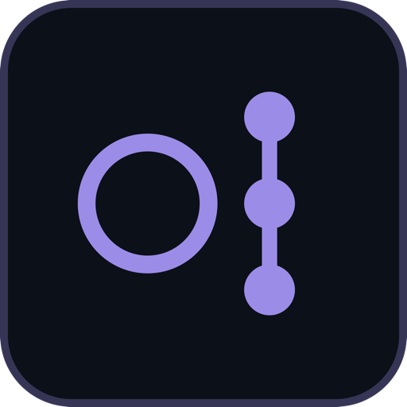

Git Diff Review
The pull-request review you already know —
locally
.
⌥
A real review surface
File list, status badges, +/− counts, jump between hunks.
±
Split or unified diffs
Syntax-highlighted, your choice per session.
✓
Viewed-file tracking & inline notes
Tick files off (
0/14 viewed
), drop comments on lines.
⌨
Keyboard-driven
j
/
k
navigate ·
v
viewed ·
c
comment ·
⌘↵
submit
⌂
100% local
No cloud, no sign-up, no telemetry — stored in local SQLite.
github.com/oullin/git-diff
· MIT · macOS (Apple Silicon)